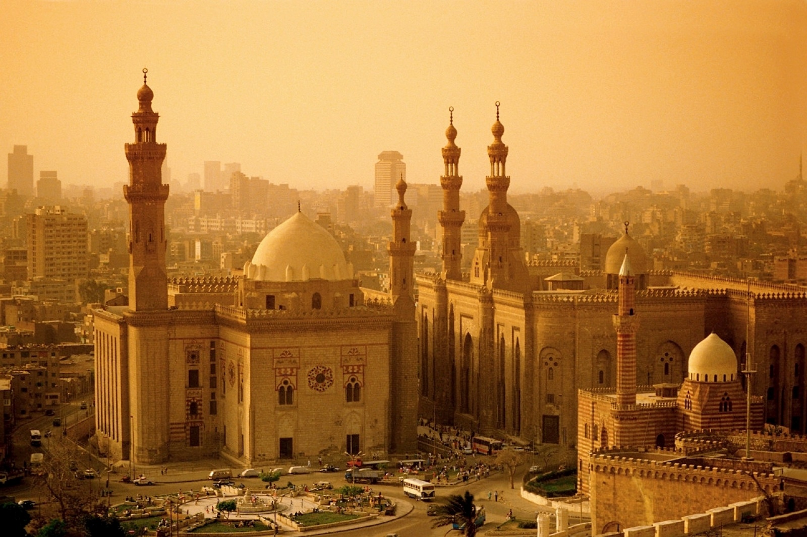
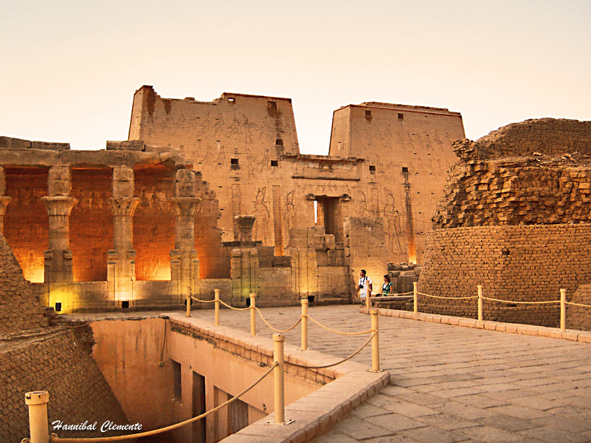
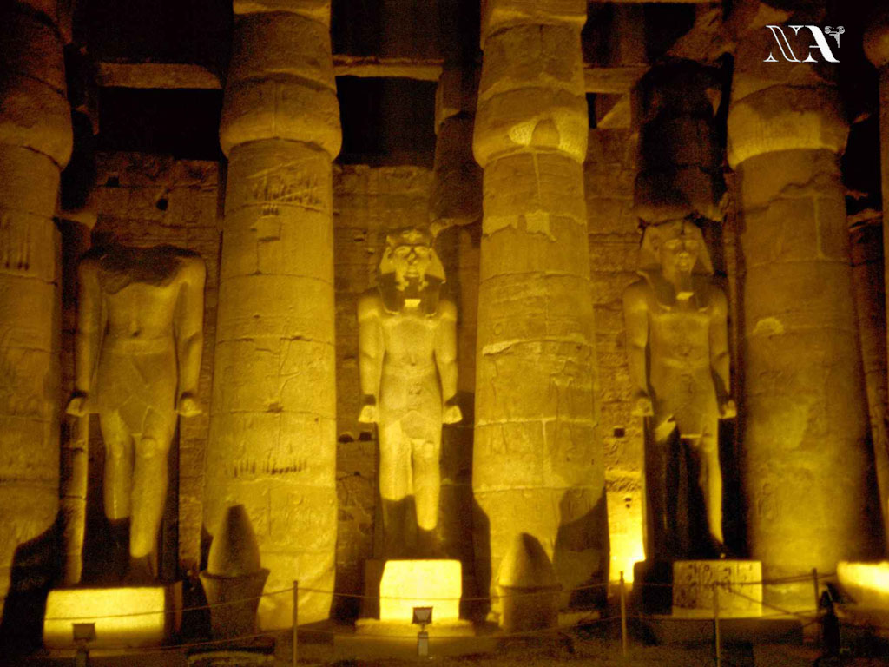
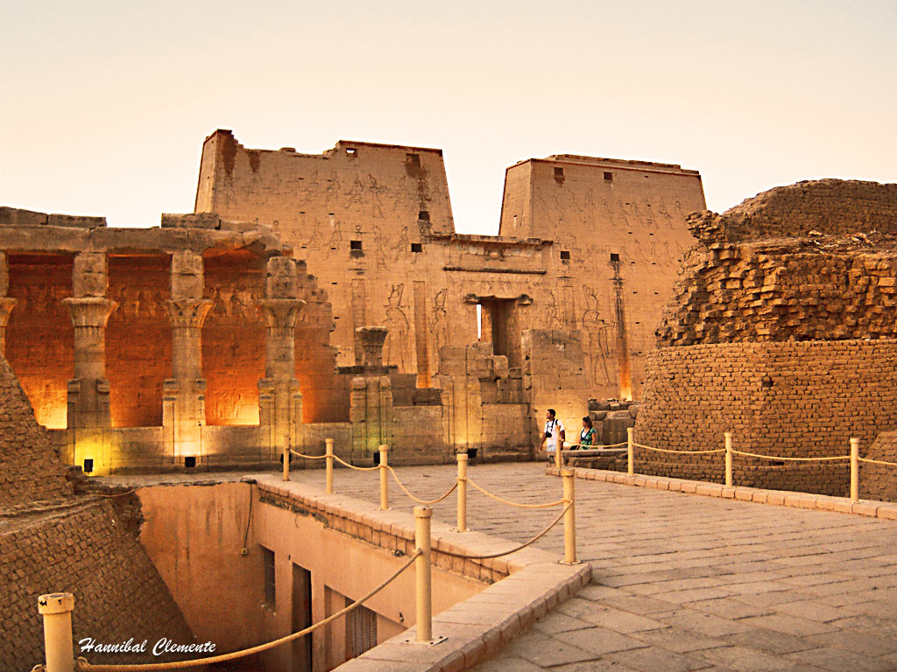
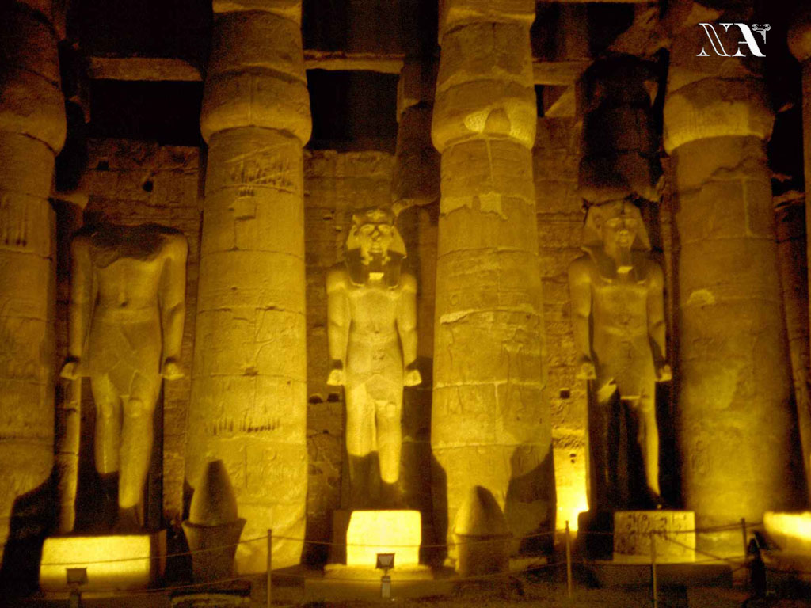
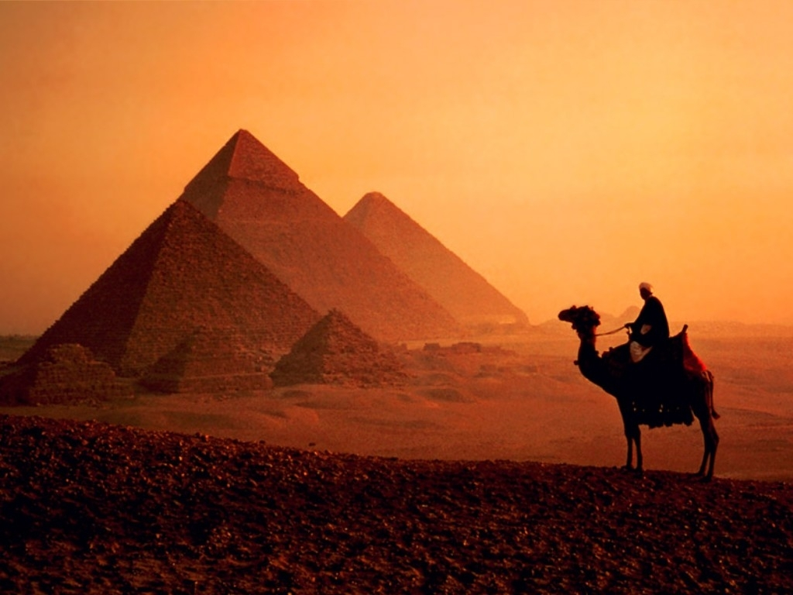

Informacion
Las pirámides son unos de los monumentos más impresionantes que nos dejó el antiguo pueblo egipcio. Miles de obreros trabajaban durante años para construir una pirámide, que serviría de tumba al faraón.
 



El Antiguo Egipto o antigua cultura egipcia fue una civilización antigua de la parte oriental de África del Norte, se concentró a lo largo del curso inferior del río Nilo en lo que hoy es el estado moderno de Egipto. La civilización se unifico en torno al año 3150 aC ,con la unificación política del Alto y el Bajo Egipto en el marco del primer faraón, y desarrollado a lo largo de los próximos tres milenios..
